Coluna do CapiAkashi
East - Atlantic Division
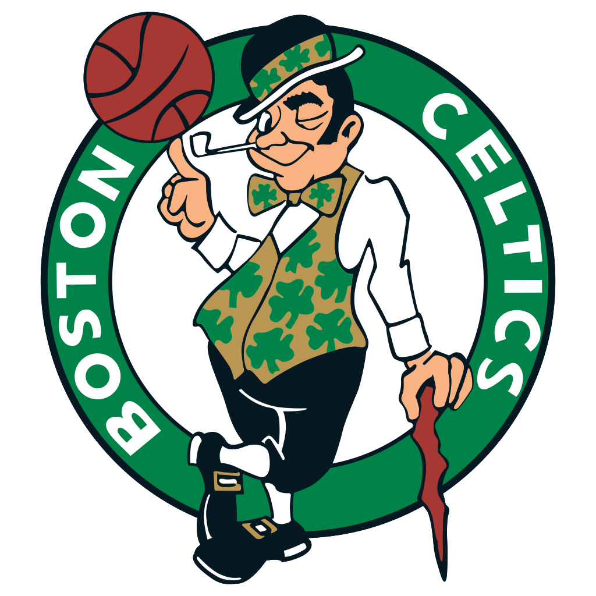
Boston Celtics
Time ainda muito forte, mas nas suas últimas últimas temporadas competitivas, Buck e Nance estão em decadência, o time tem a opção de insistir até o final em competir com esse core ou trocar suas peças e começar um rebuild, se eu fosse adivinhar o Renan vai insistir e o Celtics têm chances reais de ir as finais novamente.
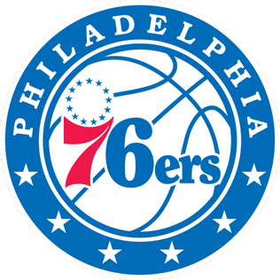
Philadelphia 76ers
O 76ers fez apenas o mínimo na off season, trouxe de volta Whiteside e Webber, o elenco é curto, mas o time ainda é muito perigoso e teve a melhor campanha no Leste nas 2 pré temporadas, retorno de Darwin Cook a Philadelphia é o principal destaque das pré temporadas do time.
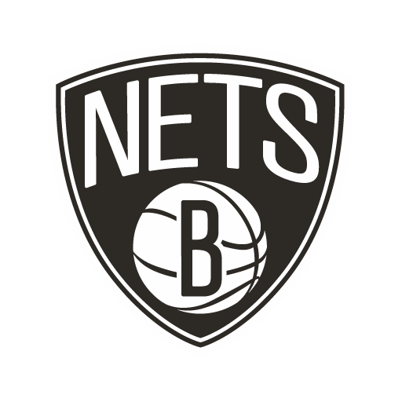
Brooklyn Nets
Uma das surpresas da temporada passada, se reforçou com Aguirre na FA, Dale Ellis continua evoluindo e Kirilenko é o DPOY, o Nets tem tudo pra continuar sendo um dos melhores times do Leste e deve brigar por mando.
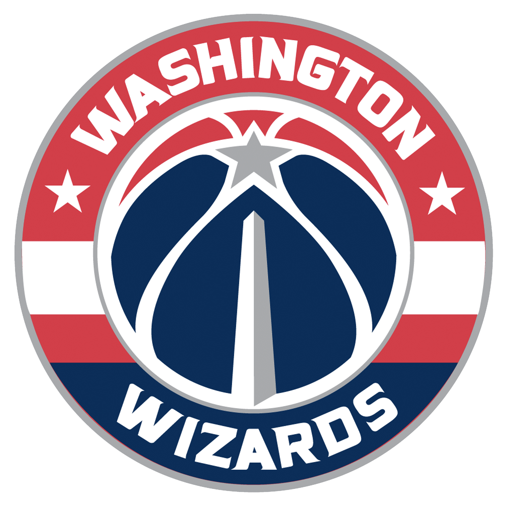
Washington Wizards
Elton Brand é um dos melhores jogadores da liga e vai ser por um booom tempo, porém o Wizards precisa começar a procurar soluções em torno dele, a perda de Klay Thompson machuca muito a capacidade desse time de espaçar a quadra, o Wizards hoje é um dos piores times arremessando de 3 e isso limita o potencial do Brand especialmente nos playoffs.
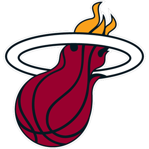
Miami Heat
A troca de conferência pode fazer bem ao Heat, o time começa a tomar forma e o cap começa a se normalizar, o time fez boas picks em Harper é Kemba mas Antawn Jamison parece ser a peça central que faltava para ser o Franchise Player dessa equipe, apesar da melhora ainda espero que o Heat não se classifique para os playoffs.
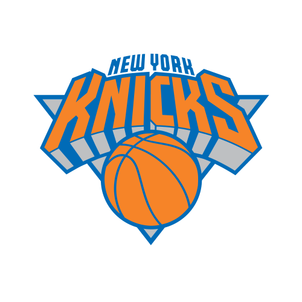
New York Knicks
Time talentoso, quando Dirk, Butler e companhia atingirem seu potencial esse time será assustador porém esse deve ser mais um ano de tank para o time de Nova York, Ja Morant cairia bem no time do maior arremessador da história liga (Lowry).
East - Central Division
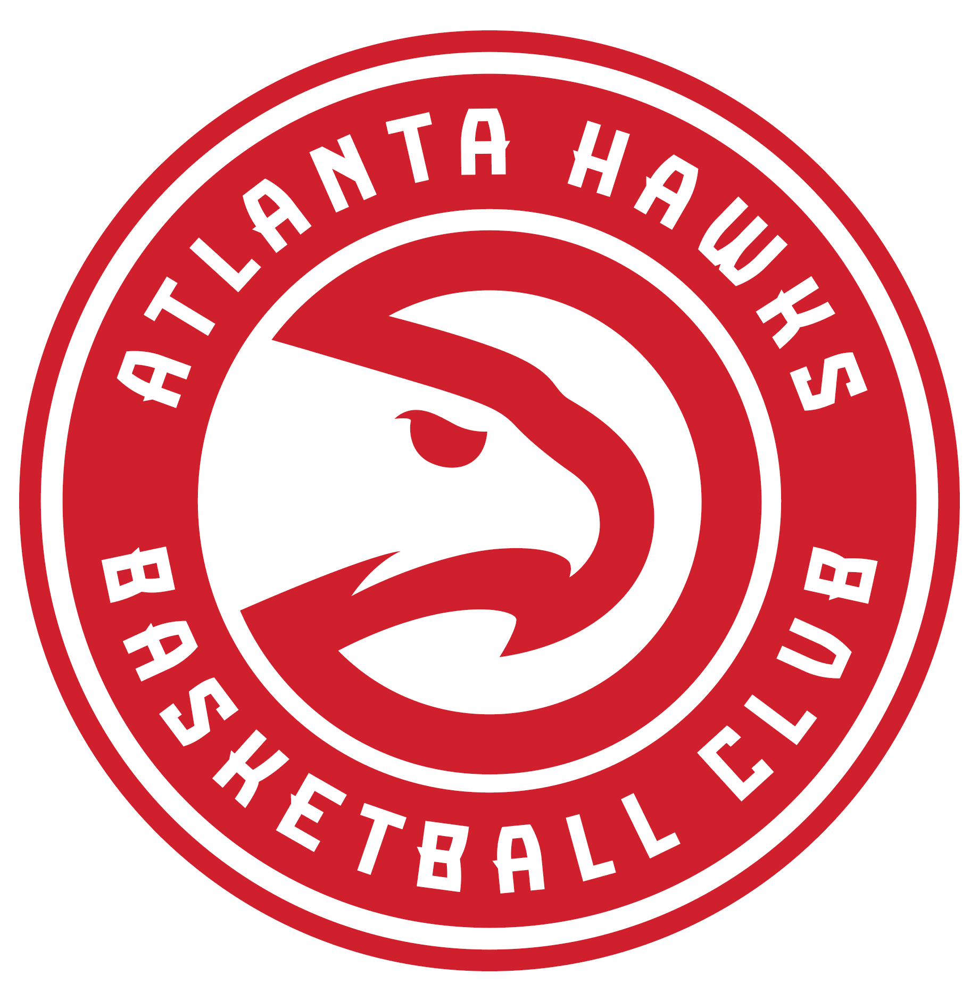
Atlanta Hawks
Sejamos honestos, o Hawks vacilou muito pickando Larry Hughes antes de Paul Pierce, mas Sampson e Kyrie continuam evoluindo de forma assustadora, Sampson especialmente já se tornou um superstar apenas em sua segunda temporada, não acho que o Hawks será uma grande ameaça no Leste, mas o time tem tudo pra dar trabalho nos próximos anos se o GM colocar as peças corretas juntas de Kyrie e Sampson, a evolução de Hughes será primordial pro sucesso dessa equipe.

Chicago Bulls
Bulls continua fazendo um bom trabalho na montagem de elenco, Evan Turner, Varejão, Reggie Jackson e Roy Hinson são todos jogadores capazes de serem titulares em vários times na liga, mas ainda falta um superstar de verdade no time.
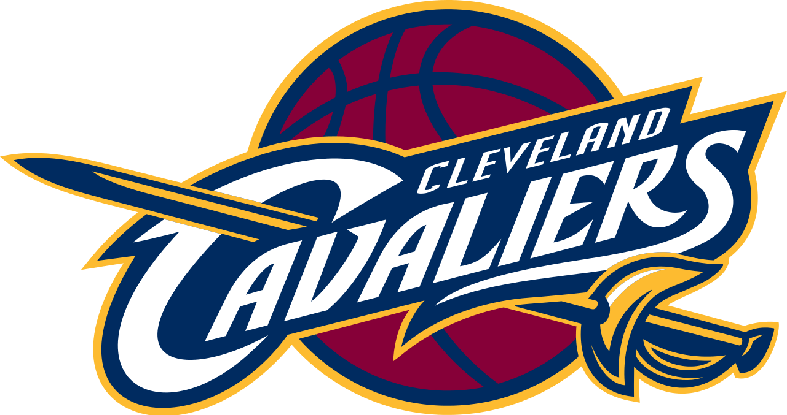
Cleveland Cavaliers
O time continua no mesmo estado irregular da temporada passada, não parece mais o time que foi finalista 2 temporadas atrás, aquele time performou acima do que era esperado? Sim, mas ainda assim um time com PG13 e D12 não deveria ficar tão perto de 50% de aproveitamento, o time não tem sua 1st round pick nessa temporada então é importante que estejam de olho.
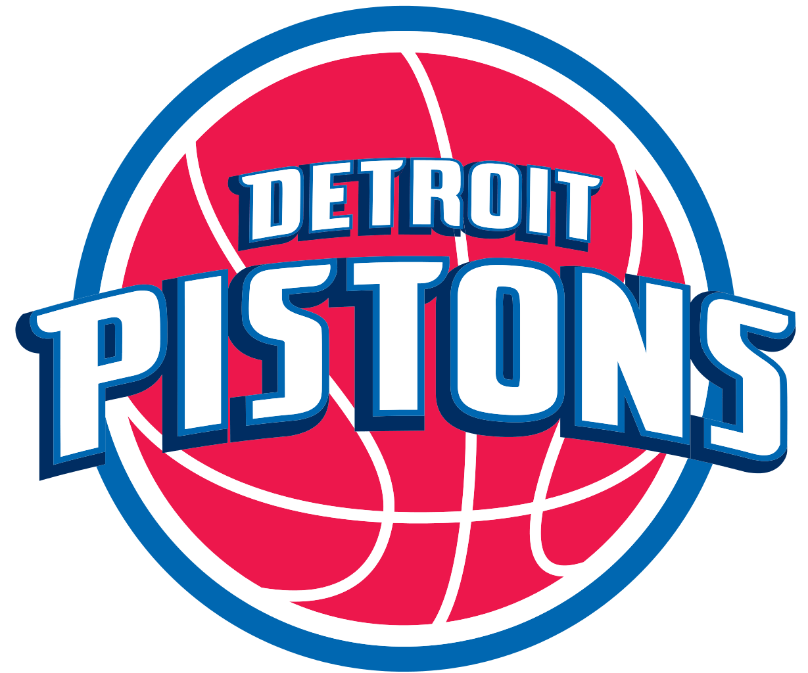
Detroit Pistons
Pistons lidou com lesões na temporada passada e acabou desistindo da temporada bem cedo, não teve sorte na loteria e acabou não conseguindo draftar nenhum upgrade imediato pro roster atual, mas o roster ainda é muito forte e Randle ainda é um dos melhores jogadores da liga, o time não tem sua própria pick então um bom desempenho nessa temporada não é opcional.
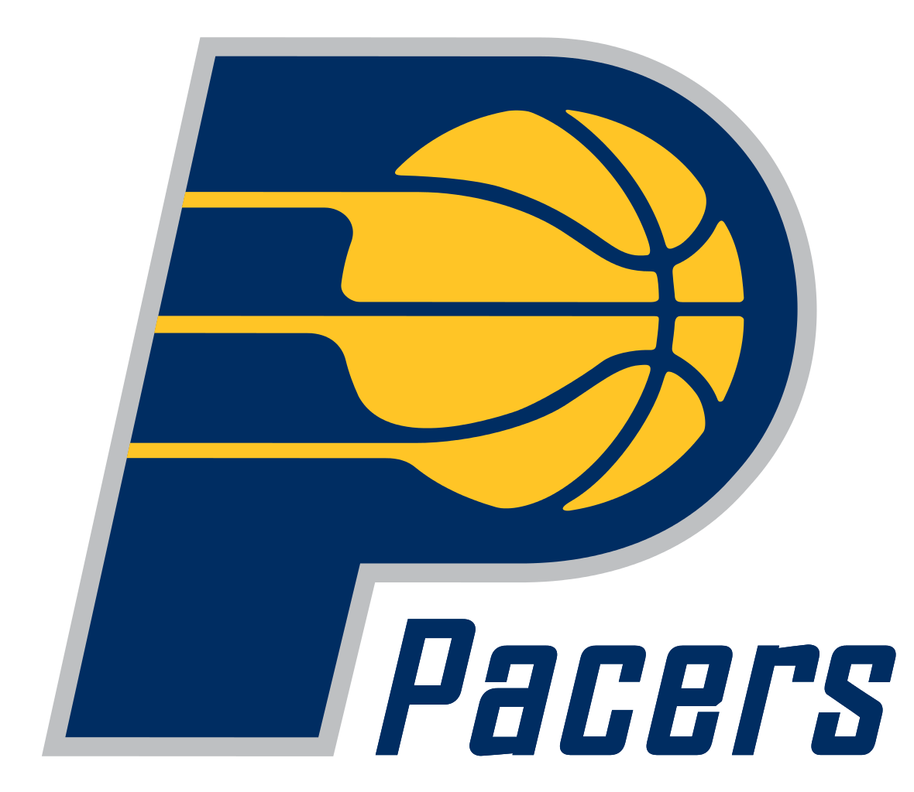
Indiana Pacers
O Pacers ainda é um dos times menos talentosos do Leste, mas as campanhas nas prés foram boas, eu gostei muito dos movimentos do time na off-season, o melhor jogador do time não é um pontuador de elite então talvez o melhor caminho seja montar um time forte defensivamente, o Celtics fez isso com o Nance, o Mavs fez isso com o Embiid, o Pacers parece ter entendido que talvez o melhor caminho seja colocar defensores ao redor do Josh Smith.
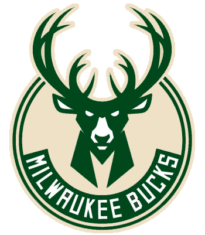
Milwaukee Bucks
Com a perda de Aguirre o Bucks dificilmente disputará no topo do Leste, mas a fundação do time é boa, Baron Davis é o arco, Tobias é a flecha, o problema é que Tobias ainda não é e não sei se ele chegará no nível de pontuação de Aguirre, o time tem os direitos da pick dos Spurs essa temporada, isso pode ser um trunfo para Erildo.

Orlando Magic
O novo time do Leste, Pierce caiu no colo de Hash, o time não tem grandes pretensões na temporada, Orlando Woolridge e Kelly Tripucka ainda tem valor na liga e podem ajudar times que buscam competir, se Hash conseguir mover essas peças por assets o futuro de Orlando pode ser brilhante.
West - Midwest Division
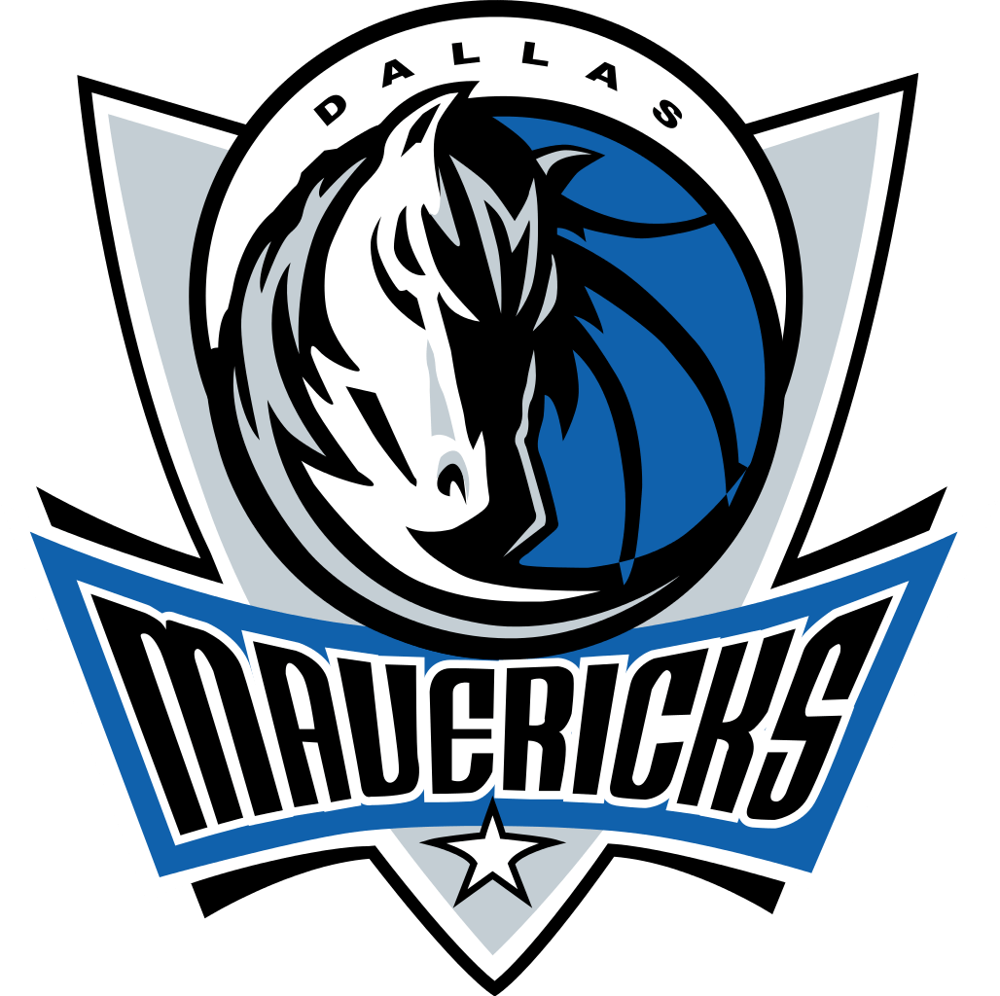
Dallas Mavericks
O Mavs liberou o Orlando para o draft de expansão e eu sinceramente não sei se essa foi a decisão correta, o time me parece muito enfraquecido ofensivamente comparado com o que foi produzido na temporada passada e o backcourt não tem a mesma habilidade defensiva do frontcourt.
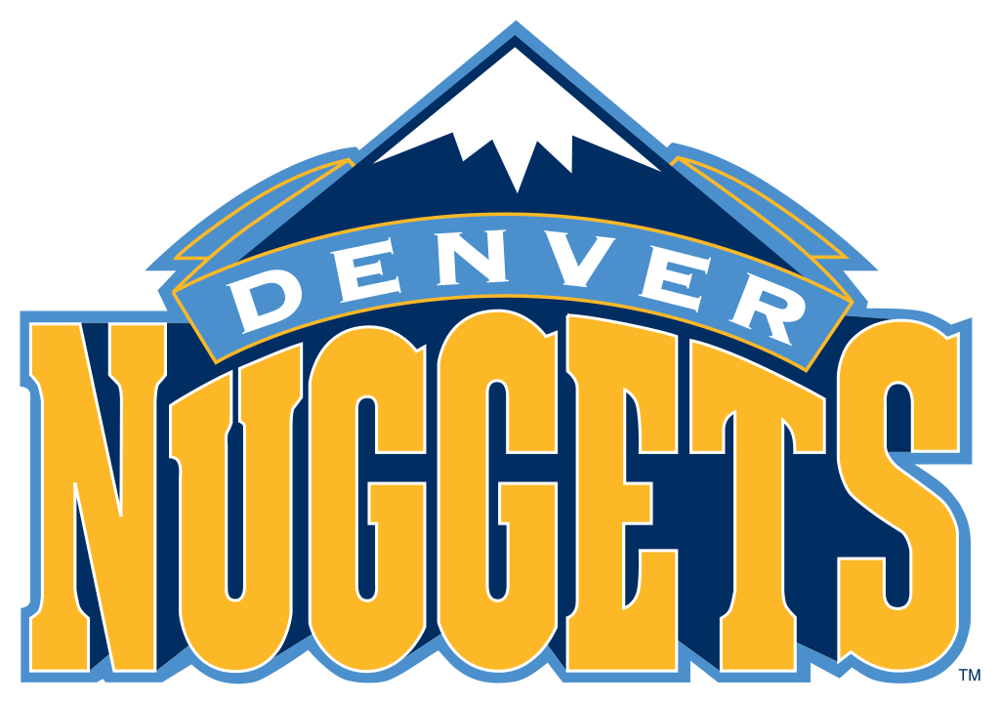
Denver Nuggets
Esse é um time muito forte mas que não consegue performar no mesmo nível dos times mais fortes do Oeste desde a temporada passada, teoricamente um time com Threatt, Hayward, Aldridge e Terry deveria ser capaz de se manter entre os melhores do Oeste, mas o que vem acontecendo não é isso.
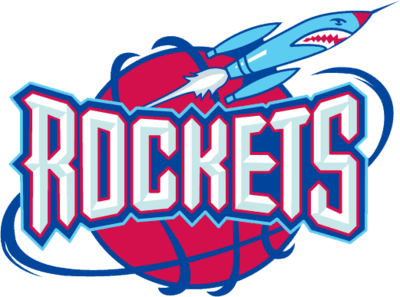
Houston Rockets
Ainda é o time mais quente da liga e provavelmente o mais talentoso, mas não adianta ganhar 70 jogos se você perder nos playoffs, Kawhi e Wall são jogadores de primeira prateleira rodeados por jogadores excelentes teoricamente esse time era pra ser o 01 do Oeste, mas se não parar de pipocar nos playoffs continuará sendo o 02.

Charlote Hornets
Se a mudança de conferência pode ser boa pro Heat, ela pode ser terrível pro Hornets, sensação dos playoffs passado, não acho que o time vai ser capaz de fazer o mesmo no Oeste.
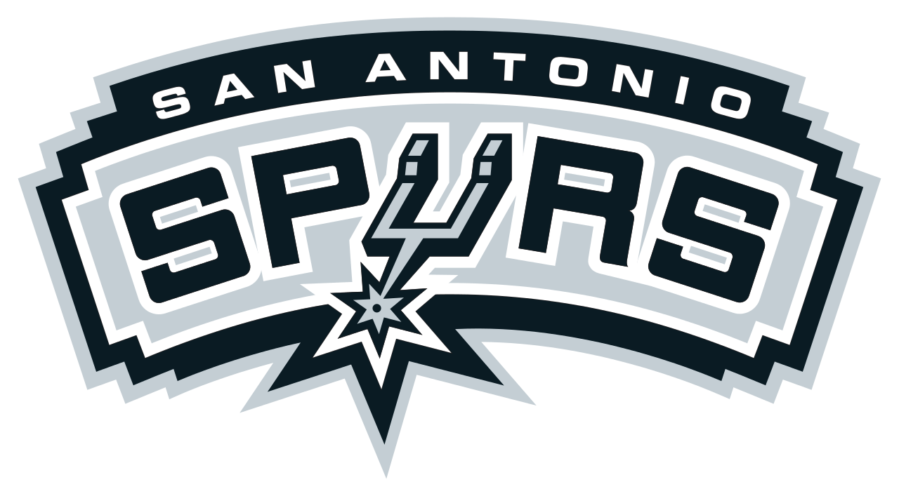
San Antonio Spurs
O Spurs está um caos, a perda de Chambers deixou Cousins sozinho em um time MUITO fraco, ele vai ter que se desdobrar pra carregar esse time, o maior perigo é o fato que o time não tem sua própria pick nessa temporada.
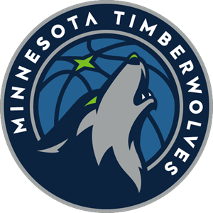
Minnesota Timberwolves
O novo time do Oeste, não parece ter interesse em competir, GM Caio já pôs o time todo a disposição, pode ser uma boa pra times que querem subir o nível do elenco.
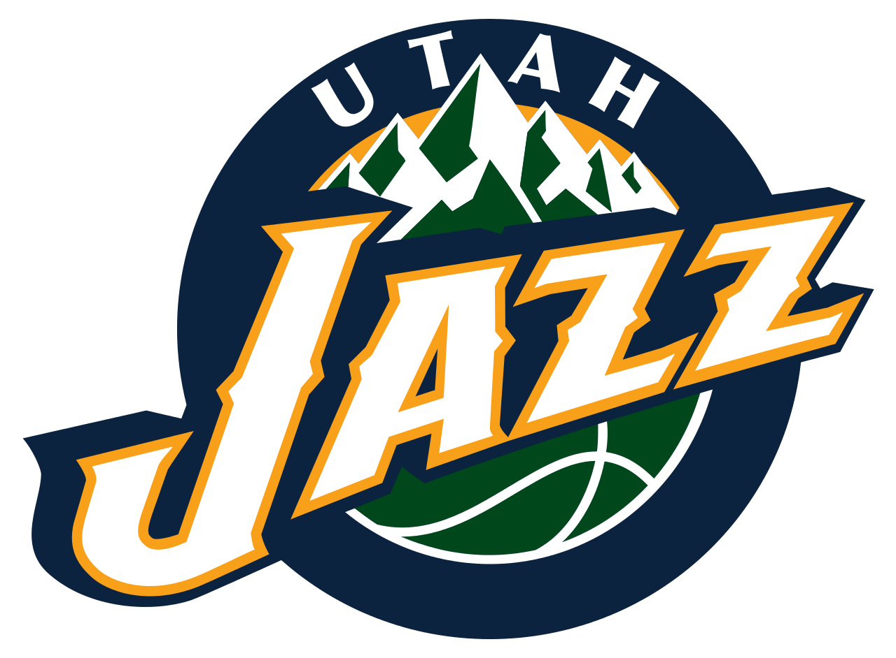
Utah Jazz
Provavelmente o melhor time que Jokic já teve, Gab esteve muito ligado no mercado de sobras e conseguiu fortalecer o banco de um time que já tinha bons starters desde o ano passado, Jokic será FA na próxima temporada, será que ele vai querer ficar em Utah se as coisas derem errado mais uma vez?
West - Pacific Division
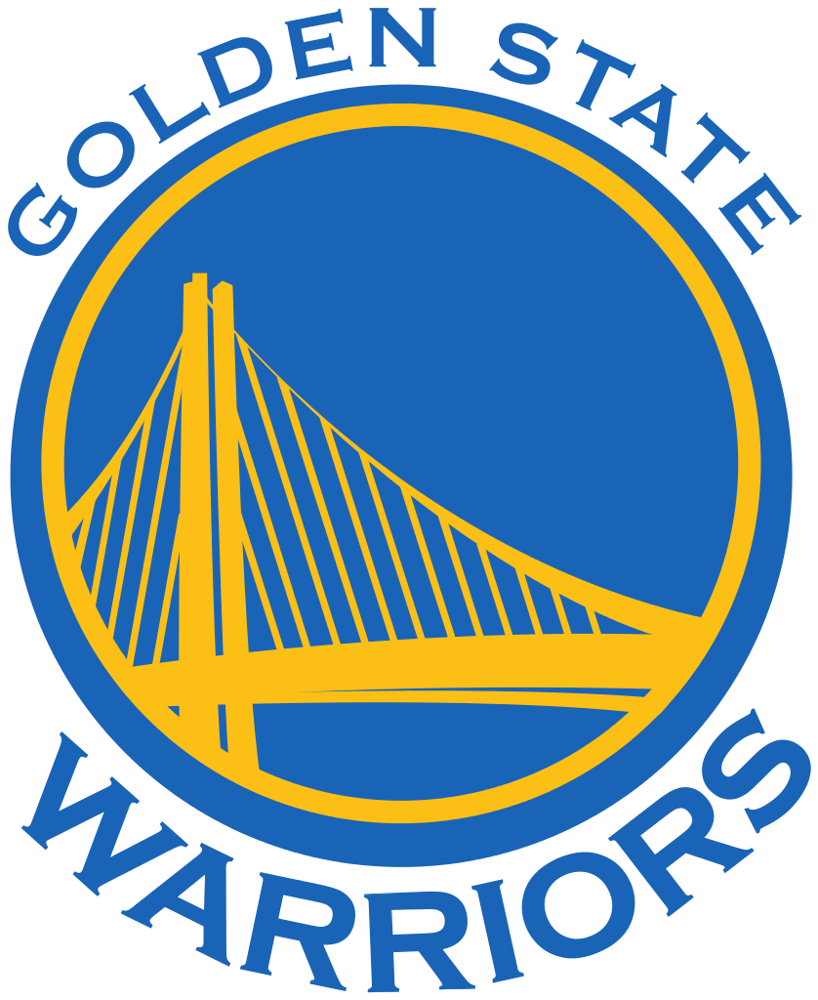
Golden State Warriors
Definitivamente não é mais o time mais fraco do Oeste, porém a timeline de Bibby, IT e Drexler não batem com a timeline de Chambers, vai ser uma temporada de um veterano tentando carregar um bando de crianças.
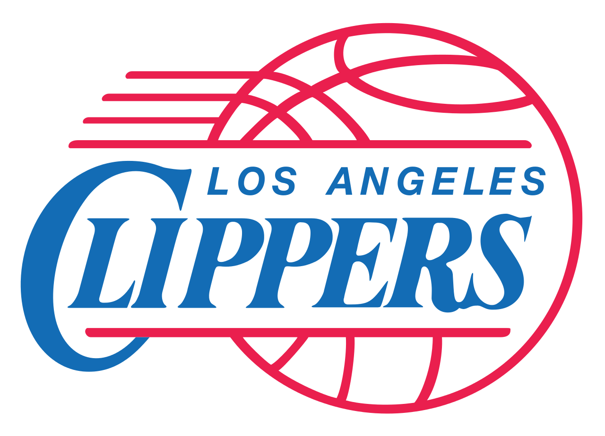
LA Clippers
Ainda é um dos times mais fortes do Oeste e extremamente jovem, Marion, ainda falta um grande pontuador pra que esse time vá de um bom time para um time capaz de bater de frente com Lakers e Rockets.
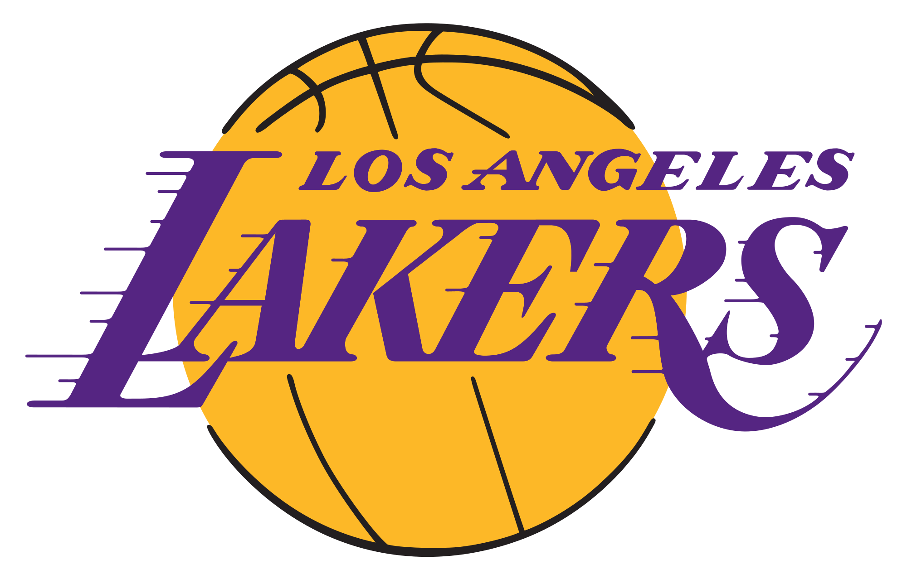
LA Lakers
Atual tri campeão da liga, manteve o mesmo elenco, vai competir mais uma vez no topo.
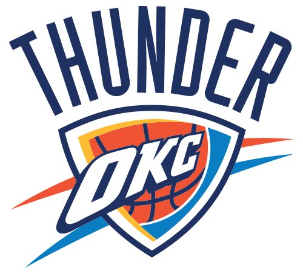
OKC Thunder
Thunder vai tankar e é isso, vai ser uma temporada legal de assistir o Wally Szczerbiak, mas vai ser só isso.

Phoenix Suns
Acredito que a temporada passada tenha sido o último suspiro do Suns como um time realmente competitivo, é um time envelhecido e um time insatisfeito, Tavares,Blackman e Grant estão todos insatisfeitos porque o time prometeu que seria contender pra esses caras e não conseguiu cumprir, talvez seja a hora de Eurico abrir mão de competir e tentar conseguir recursos no mercado.
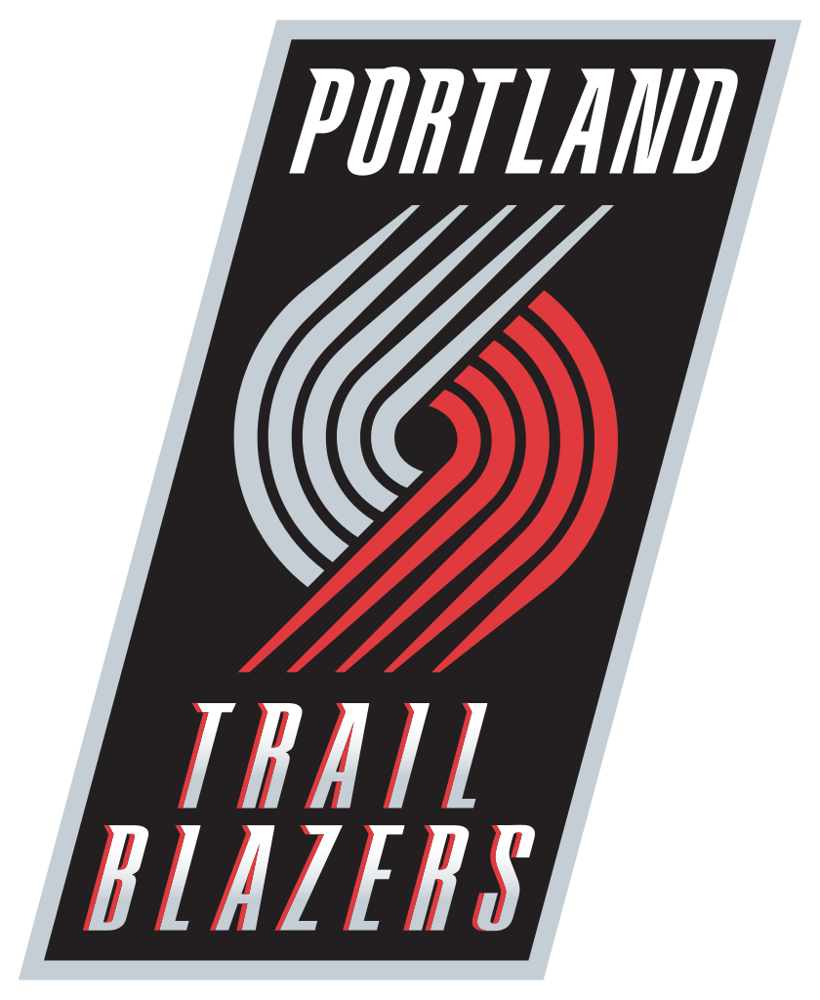
Portland Trail Blazers
Talvez menos talentoso que o Clippers, mas acho que o Blazers tem mais capacidade de competir atualmente, MWP tem a capacidade de ganhar jogos sozinho e os jogadores ao redor dele são bastante talentosos, é um time que não pode ser subestimado.
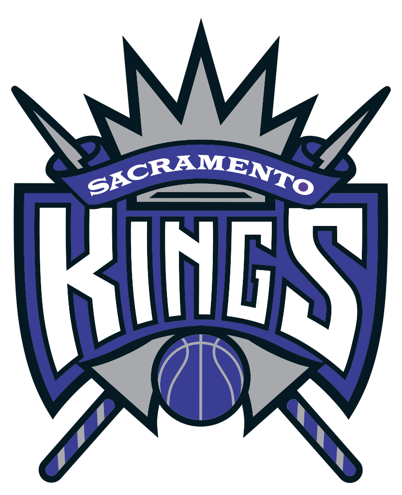
Sacramento Kings
Eu não sei o que falar sobre o Kings, não importa o quão bom o time é, parece que nunca vai dar certo.